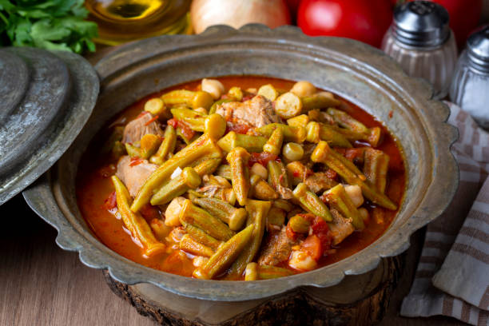

Description:
Bamya is a Middle Eastern okra stew simmered in a tomato-based sauce often with lamb or beef, garlic, and spices, served with rice or bread.
Ingrediants:
- Okra
- Lamb or beef pieces
- Onions
- Garlic
- Tomato paste
- Tomatoes
- Vegetable oil
- Salt, pepper, pomegranate molasses (optional)
Steps:
- Brown meat with onions in oil, season well.
- Add water and simmer until meat is tender.
- Add okra, tomato paste, garlic, and spices.
- Simmer until okra is soft and sauce thickens.
- Adjust seasoning and serve hot.